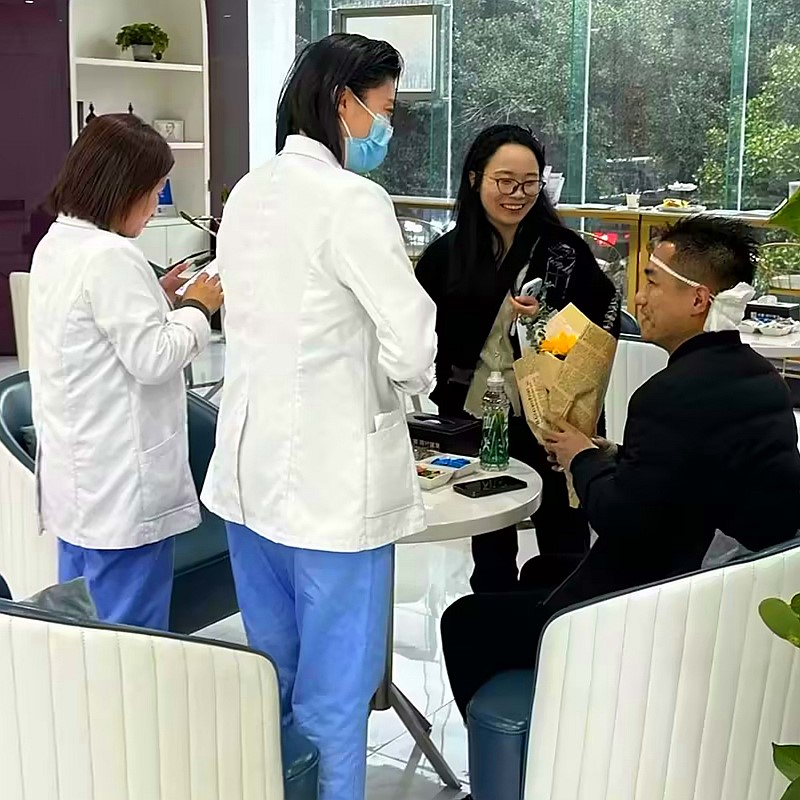
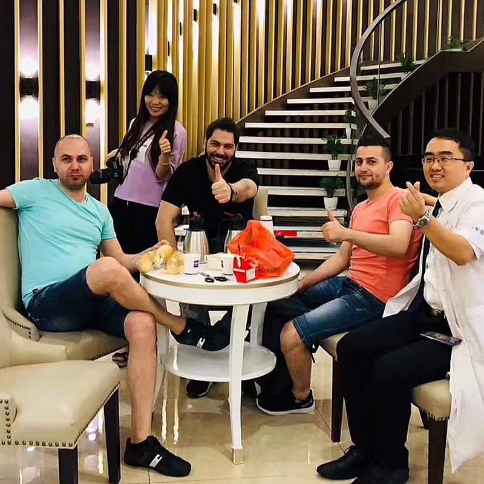
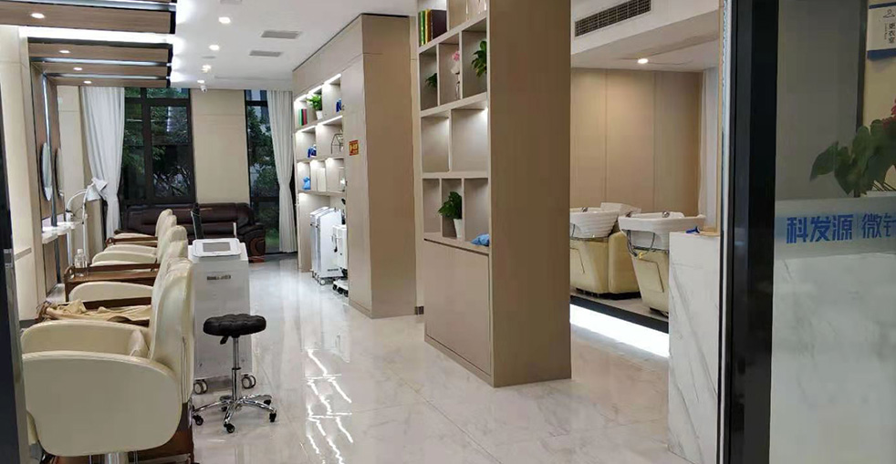

A durable solution for brows that have become thin, uneven, or completely absent
Eyebrow transplantation represents a specialized cosmetic intervention aimed at reconstructing brows that have grown thin, developed patches, or disappeared entirely. The technique involves meticulously relocating viable hair follicles from a donor region — typically the posterior scalp — to the brow zone. The end result is eyebrows that function and appear identical to your original ones: they continue growing, can be trimmed, groomed, and styled according to your preference.
While microblading and cosmetic tattoos merely simulate fuller brows by embedding pigment beneath the skin surface, eyebrow transplantation employs your genuine living follicles. The outcomes possess genuine depth, authenticity, and true permanence. Because the relocated hair originates from your own body, it responds naturally to moisture, temperature fluctuations, and sebum production — behaving precisely as authentic brow hair ought to.
Achieving exceptional outcomes in eyebrow transplantation demands both surgical mastery and aesthetic sensibility. Brow hairs develop at highly specific angles and orientations that differ markedly from scalp hair patterns. Our surgeons employ specialized brow restoration methodologies, positioning each graft at the precise 10–15 degree angle required to mimic natural eyebrow development. The result is brows that appear entirely authentic — never resembling relocated scalp hair on your face.
Typical scenarios that motivate patients to pursue brow restoration
Extended periods of frequent tweezing, waxing, or threading can cause irreversible harm to eyebrow follicles. Our restoration procedure reconstructs the complete, natural brow contour you desire — even when natural regrowth has become impossible.
Scars resulting from accidents, burns, surgical procedures, or trauma in the brow region can be effectively addressed. Our specialists position healthy follicles directly within scarred tissue to reconstruct a seamless, natural-looking brow.
Certain individuals are simply born with thin, patchy, or barely visible eyebrows. Our procedure can provide you with the fuller, more defined brows you've always desired — and the outcomes endure permanently.
Conditions such as alopecia areata, thyroid disorders, hormonal fluctuations, or chemotherapy treatments can result in partial or complete brow loss. Once your medical situation is stabilized, we can permanently restore your eyebrows.
Where technical mastery converges with artistic vision
Phase 1 — Customized Brow Mapping: Prior to beginning the procedure, our surgeon outlines your new eyebrow contour directly on your face using a surgical marker. We work collaboratively with you to determine the ideal shape, density, and curvature that complements your facial structure. Your input is essential — we refine the design until you're completely satisfied with the proposed plan.
Phase 2 — Single-Hair Graft Selection: For eyebrow restoration, we exclusively utilize single-hair grafts to achieve the most authentic appearance. Our technicians meticulously identify the finest, most delicate follicles from your donor region, as these produce the softest, most realistic eyebrow hairs.
Phase 3 — Precision Placement: Using our most refined microneedle instruments, each graft is positioned at the exact angle and orientation that corresponds to natural brow development. The brow's front section grows upward and outward, the middle section lies more horizontally, and the tail angles downward. This multi-directional methodology is what produces genuinely authentic results.
Phase 4 — Strategic Density Distribution: We construct a natural gradient — increased density in the brow's central region, gradually tapering toward the front and tail. This graduated approach mirrors how authentic eyebrows develop, preventing the unnatural "solid block" appearance that less experienced practitioners often produce.
Discover the perfect brow contour that complements your features
A subtle arc that traces your natural brow ridge — the most universally appealing option that suits the majority of face shapes and age groups.
A modern, horizontal brow style currently popular in contemporary beauty — delivers a fresh, youthful, and welcoming appearance.
A more dramatic curvature that produces an elevated, refined appearance — ideal for individuals seeking a bold, striking brow statement.
An entirely personalized brow shape developed to align with your facial proportions, ethnic characteristics, and individual style preferences.
Estimate the graft count applicable to your circumstances
Typical cases require 150–300 grafts per brow, contingent upon the extent of hair loss and your desired fullness level. Your surgeon will provide precise numbers during your consultation.
Comprehensive restoration of both eyebrows generally requires 300–600 grafts total. The complete procedure is performed in a single session lasting 3–5 hours under local anesthesia.
Depending on scar dimensions, you may require 200–400 grafts. We typically employ slightly elevated graft counts to offset the reduced survival rate in scarred tissue.
Certain patients elect to return 8–12 months later for additional density. A refinement session typically involves 100–200 supplementary grafts.
Trusted by individuals from over 30 nations worldwide
Our surgeons combine clinical accuracy with creative vision, sculpting eyebrows that enhance your inherent features and appear entirely authentic — never overdone or artificial.
Our 0.6mm micro-tools enable the most precise graft positioning available, producing natural-looking outcomes with minimal tissue disruption and faster, more comfortable recovery.
Our international patient coordinators communicate fluently in English, ensuring you feel supported and thoroughly informed from initial inquiry through complete recovery.
Individualized eyebrow transplant utilizing state-of-the-art FUE techniques for genuine, enduring outcomes

Your eyebrows significantly influence your facial appearance and self-expression. If excessive grooming, genetic factors, or medical conditions have left your brows looking thin or asymmetrical, our eyebrow transplant can provide the lush, natural-looking brows you've been missing. By utilizing your own healthy follicles, we deliver permanent results that no pencil, powder, or tattoo could ever replicate.
Customized to harmonize with your features
Your own hair — permanently established
0.6mm micro-precision instruments
Authentic hair that grows like natural brows
From initial consultation to your final, permanent results
Outline and perfect your ideal brow contour directly on your face
Extract the finest single-hair grafts from your posterior scalp
Sort and ready the most delicate follicles for brow placement
Position each graft at the precise angle of natural brow development
Verify both brows are perfectly aligned and evenly balanced
Aftercare guidance and 12 months of growth monitoring
What makes our eyebrow restoration the preferred choice for patients
Exceptional eyebrows demand both technical proficiency and artistic vision. Our surgeons dedicate substantial time during your consultation to develop a brow contour that harmonizes with your face shape, eye positioning, bone structure, and ethnic background. We continue refining the design until it perfectly matches your vision.
Natural eyebrows don't develop in a single direction. Front hairs point upward, middle sections lie horizontally, and tails angle downward. Our surgeons reconstruct this complex directional pattern with precision, providing you with brows that appear genuinely authentic from every angle.
Because the transplanted hair originates from your own body, you can trim it, brush it with a spoolie, and style it exactly like natural brow hair. It develops at a rate comparable to scalp hair, meaning you'll need occasional trimming — but this also ensures your brows will never fade or disappear the way tattooed brows eventually do.
An industry leader in eyebrow restoration with demonstrated excellence
Pioneering microneedle hair transplant technology and setting industry standards since 2006
Strategically positioned in major metropolitan areas, all maintaining identical high care standards
Exclusive microneedle and implant pen systems that consistently produce exceptional outcomes
Patients from across the globe rely on us for consistently remarkable results
Comprehensive English-language assistance for international patients from initial contact through final recovery
State-of-the-art facilities with rigorous safety protocols ensuring your comfort and confidence
Witness the remarkable changes our patients have achieved


Authentic moments with our satisfied eyebrow transplant patients

Photograph with our medical team following a successful procedure

Celebrating exceptional outcomes alongside our surgeons

A satisfied patient sharing their positive experience

Patient with our specialist prior to discharge

Patient with Dr. Chen following treatment

Enthusiastic patient displaying their refreshed appearance

Patient delighted with their new appearance

Patient embarking on a new chapter with exceptional results
Authentic accounts from individuals who selected us for their eyebrow restoration
During my teenage years, I excessively tweezed my brows, and they never recovered. Barley performed 280 grafts on each eyebrow, harvesting hair from behind my ear. Before the procedure, my surgeon meticulously mapped out the precise arch I desired. Now at 9 months post-procedure, my brows are full and appear completely authentic. I haven't used an eyebrow pencil in months!
Alopecia areata eliminated both of my eyebrows over a three-year span. The procedure restored 310 grafts total. What truly impressed me was how meticulously they positioned each hair to align with natural growth patterns — they lie flat and sweep upward exactly like authentic brow hair. The complete results at 11 months are absolutely remarkable.
A vehicle collision left a scar running directly through my right eyebrow, dividing it completely. Barley transplanted 150 grafts directly into the scarred region. I was concerned they might not survive, but over 90% took hold. Six months later, the gap has disappeared and my brow appears uniform again. The craftsmanship was exceptional.
My thyroid condition caused my brows to thin until they were barely noticeable. I was spending £40 monthly on brow products and microblading sessions that never lasted. Receiving 260 grafts per brow has been the best decision I've made. At 7 months, they're full and I only need to trim them weekly. My entire makeup routine now requires just 5 minutes!
As a man, my brows had become noticeably thinner over time. The surgeon created a strong, masculine contour — not overly arched, not excessively thick. I received 240 grafts per eyebrow, and at 10 months the difference is subtle yet significant. Nobody realizes they're transplanted — they just assume I'm getting better rest!
The consultation was exceptionally comprehensive — they employed digital imaging to demonstrate how various brow contours would appear on my face before we finalized the design. The actual procedure required only 2 hours with local anesthesia, and I experienced no discomfort whatsoever. They positioned 300 grafts total, and now at 8 months my sparse, patchy brows are beautifully full.
Explore our modern, welcoming clinic environment

Our advanced medical center

Relax in our inviting waiting area

Sterile, contemporary, and fully equipped

Private and professional environment

Comfortable post-procedure space

Friendly, inviting entrance
Below are responses to what our patients most commonly inquire about
Reach out for a complimentary consultation
15810155700
+86 13730143529
hairtransplant@qq.com